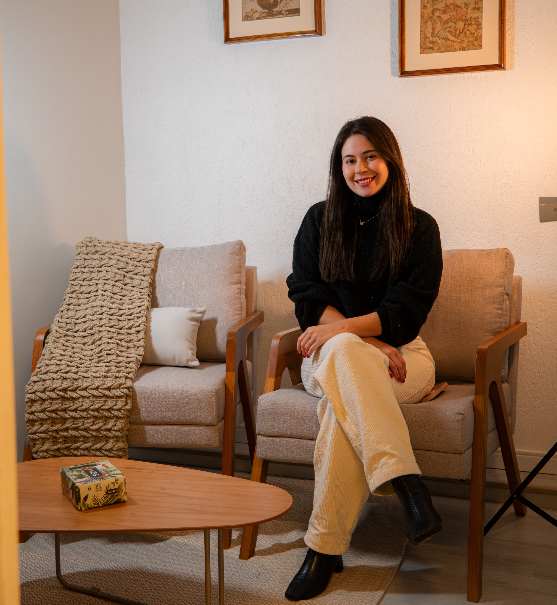
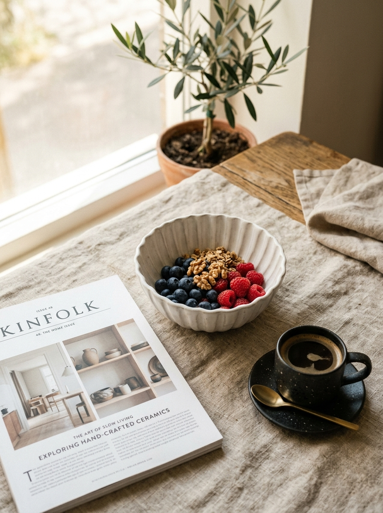

Psicóloga Clínica com base na psicanálise um espaço de escuta genuína para você se reconectar consigo mesma e encontrar seu próprio caminho.
Formada pela Universidade São Camilo, em São Paulo, construí meu percurso caminhando ao lado de pessoas em momentos muito diferentes da vida: atuei no Hospital das Clínicas, no acolhimento a mulheres vítimas de violência em parceria com o Fórum Criminal da Barra Funda e na Cracolândia. Experiências que me ensinaram profundamente sobre escuta, vulnerabilidade e cuidado.

Propósito & Escuta
Acredito que cada pessoa carrega uma história única, e meu compromisso é oferecer um espaço de escuta genuína, sem julgamentos, onde você possa se olhar com mais verdade, se reconectar consigo mesma e encontrar seu próprio caminho.
Hoje, dedico minha prática ao atendimento clínico com base na psicanálise, com atenção especial e aprofundada a questões como depressão e autoestima. A escuta analítica proporciona um ambiente seguro para desatar nós internos, compreender a raiz do sofrimento e cultivar uma relação mais gentil e autêntica consigo mesma.
